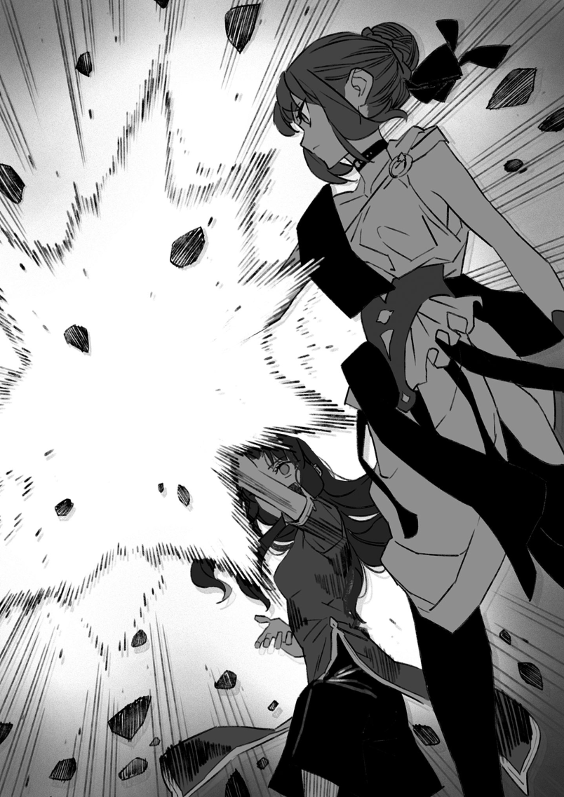

"Poça"
5 dias atrás, Snowfield
Quando o Espírito Heroico Hippolyte recebeu do Graal o conhecimento necessário e se materializou, foi recebida por luzes cintilando por toda parte.
Ao sentir uma torrente de Energia Mágica percorrendo seu corpo inteiro, concluiu que aquela era a energia da invocação e tentou fazer o apelo formal à pessoa que a contratara.
Porque compreendia seu papel como Servo desde o instante de sua invocação, assim como a maioria dos seres vivos compreende, desde o nascimento, a necessidade de respirar.
- Pergunto-lhe: caminhará pelas planícies férteis como minha Mestra?
No instante em que tentou ver a pessoa a quem deveria dirigir essas palavras, sua inteligência rapidamente compreendeu a situação em que se encontrava.
Ela entendeu que aquelas luzes e aquela torrente de Energia Mágica não provinham do ritual de invocação.
Faíscas de choques violentos.
O estalo de ossos
Rugidos vazando de uma garganta
Músculos explodindo de ressentimento
Uma sinfonia de dentes se triturando
Um canto de vasos sanguíneos se dilatando num instante
O riso perverso de articulações se rasgando.
Golpe cortante. Golpe contundente.
Golpe perfurante. Golpe esmagador. Magia. Magia incendiária.
Magia glacial. Magia trovejante. Gritos de ira. Gritos de tristeza. Gritos de angústia. Gritos de deleite.
O lugar estava carregado de toda forma de discórdia e violência.
Hippolyte era a rainha das amazonas. A líder de uma tribo guerreira. Aquele ar lhe era familiar.
Conflito. Guerra.
Hippolyte não fora invocada para um altar cerimonial de praxe, mas para o meio de um conflito feroz.
"...?"
Ela era, entre os incontáveis Espíritos Heroicos da Grécia Antiga, filha de Ares, o deus da guerra, e a principal guerreira encarregada de guardar o templo de Ártemis, deusa da caça.
Por isso, o conflito jamais poderia abalá-la.
Porque aquilo era uma luta entre seres humanos de carne e osso, não uma batalha entre heróis da Era dos Deuses.
Mas aquilo a confundia.
Segundo o conhecimento que o Santo Graal lhe dera, a invocação de um Espírito Heroico era um ritual executado com um catalisador e um encantamento.
Algumas tribos e religiões mantêm ritos de oferenda ao deus da guerra, mas aquilo não devia ser nada desse tipo.
Por que ela fora invocada para assistir a uma batalha?
Pensou que um inimigo tivesse aproveitado o instante da invocação para lançar um ataque surpresa, mas sua experiência como líder guerreira rejeitou de imediato essa hipótese.
A luta entre aquelas duas pessoas já durava havia muito tempo.
O que está acontecendo aqui?
A líder guerreira não entrou em pânico apesar da confusão.
Espere... considerando o nível desta batalha, talvez... isto não tenha sido uma cerimônia adequada, mas talvez tenha bastado para me chamar.
Duas figuras colidiam, e ela não tinha razão alguma para tomar o partido de nenhuma delas.
Fora invocada, mas ainda não estava contratada.
Assim, Hippolyte observou.
Para saber o que estava acontecendo no solo sagrado de sua invocação.
Ou para determinar o que exatamente era aquela Guerra do Santo Graal.
"Aaaargh! Você nunca vai desistir?", disse uma das figuras que trocavam disparos, uma mulher de vermelho, enquanto lançava maldições gandr.
Ela disparava projéteis amaldiçoados com a força de uma rajada tripla de um fuzil de assalto. O alvo se desviou por um triz, e o impacto pulverizou partes da parede de concreto às suas costas, deixando as vigas de aço expostas.
Enquanto a mulher de vermelho confirmava o resultado do disparo, seus olhos escuros encontraram Hippolyte.
"Parece que nossa convidada não teve paciência para esperar terminarmos. Quer continuar?", acrescentou, aumentando ainda mais a distância entre ela e a oponente.
A outra figura — uma mulher que cobria toda a área ao redor de si com fumaça negra — respondeu à pergunta da inimiga de vermelho com um olhar afiado.
"Deixe-a esperando. Ou você queria uma pausa para tomar chá com o Espírito Heroico?"
Por entre as aberturas da fumaça negra, dava para entrever um rosto harmonioso, dentes afiados como os de um tubarão e um par de óculos de proteção góticos gravados com letras mágicas.
Suas palavras vinham tecidas com uma risada maldosa, mas, em contraste, a mulher de vermelho apenas suspirou e deu de ombros.
"Boa dedução. Era exatamente isso que eu pretendia fazer desde o começo."
Não houve atraso algum entre as palavras da mulher e suas ações.
"Sem você, é claro."
Aquele suspiro e aquele dar de ombros não eram mera provocação.
Cada um de seus movimentos tinha o propósito de ajustar o fluxo de Od em seu interior e servir de preparação para um impulso explosivo nas articulações e nos músculos.
Sua investida foi tão explosiva que um homem comum teria achado que ela simplesmente havia desaparecido.
Uma forma soberba de se mover, que combinava Energia Mágica, técnica e toda a força física arduamente cultivada por ela.
Seu corpo esguio atingiu a velocidade máxima num piscar de olhos.
A essa altura, seus membros já haviam passado à forma seguinte.
Um golpe perfeito com o dorso da mão voou na direção do corpo da oponente.
Um golpe na caixa torácica. Mesmo um tapa comum naquela região já tinha chance de ser fatal para um corpo pouco treinado.
Mesmo assim, aquilo nem de longe era o pior que ela era capaz de fazer.
Logo no início do movimento, a mulher de vermelho disparou da ponta do dedo uma esfera de maldição, correu à mesma velocidade que o disparo e, junto com ele, desferiu seu golpe torcido com o dorso da mão para impulsioná-lo ainda mais.
"Gah...!"
Os óculos da mulher se racharam com o impacto.
O golpe acertara o peito, bem longe do rosto, e ainda assim a força transmitida pelo corpo dela fora intensa o bastante para causar danos visíveis ao acessório em sua face.
"Kh... Kh... Haha, hahahahaha!"
Acertada por um golpe e uma maldição inevitavelmente capazes de nocautear um campeão de boxe com um único impacto, a mulher de óculos riu em êxtase.
"Agora entendi... Então você é mesmo tão boa quanto dizem! Não... melhor do que dizem! Average One!"
"Não sei que rumores você ouviu, mas eu sou muito mais do que os meus atributos... Ah!"
Tohsaka Rin — a mulher de vermelho — se esquivou do golpe cortante da adversária no meio da frase.
"Verdade, erro meu!"
O golpe da maga de óculos — Doris Lusendra — também estava além do humano.
A primeira coisa a chamar atenção era que seus dedos não tinham nada de humanos. Sua forma e sua dureza haviam sido alteradas para lembrar as garras de uma ave de rapina — ou, melhor dizendo, de um dragão fantasmagórico. Isso os transformava em lâminas capazes de partir um ser humano ao meio. E ela investiu contra Rin para emendar o próximo ataque.
O que tornava seus golpes de corte tão difíceis de enfrentar era o fato de que cada um deles fazia mover toda a nuvem de fumaça negra ao seu redor.
Às vezes, ela servia como uma cortina de fumaça obstrutora tradicional; às vezes, como grilhões capazes de atrasar os movimentos do inimigo; e parte da fumaça ainda podia se condensar e atacar Rin como um terceiro braço.
A família Lusendra.
Uma linhagem que definiu como um de seus objetivos finais reproduzir com a própria carne e sangue uma espécie fantasmagórica do Japão supostamente extinta, os oni, e passou os últimos mil anos modificando o próprio corpo e os próprios Circuitos Mágicos.
Com uma forma especial de Magia de Reforço transmitida pela família, eles reaproveitam o próprio esqueleto, cada fibra muscular, cada nervo, cada vaso linfático e cada vaso capilar para fazê-los funcionar como Circuitos Mágicos improvisados.
Seu destino final se definia pela contradição de fazer um passado já perdido alcançar o futuro distante.
Para se apoderar, compreender ou reescrever aquilo que se perde com o avanço da forma atual da Ordem Humana, muitos magos mantêm aceso o motor de suas linhagens.
Doris Lusendra era uma dentre muitos que usam a própria vida e a própria alma como combustível para avançar pelos trilhos traçados por suas linhagens.
"Eu queria muito elogiá-la agora, mas a primeira palavra que me vem à cabeça é 'nojenta'." Rin deu de ombros, olhando para as paredes, o piso e os pilares semidestruídos. "Em um instante, você transformou o atributo desta sala no seu próprio sem usar nem Artefato Místico nem catalisador... não, na verdade, a essa altura o seu próprio corpo já é um Artefato Místico e um catalisador."
A sala trazia as marcas da destruição. Algumas eram obra da magia de Rin, mas a maioria vinha do próprio corpo de Doris, e as partes que ela destruíra estavam encharcadas dos resíduos da fúria de Energia Mágica que vazava dela.
Ou seja: quanto mais Doris destruía, mais aquele ambiente se tornava magicamente vantajoso para ela.
Os destroços impregnados de Energia Mágica já haviam começado a ressoar com Doris. O interior da sala expressava a própria intenção hostil de remover o elemento indesejado que era Rin.
"Você é a maior parede no meu caminho! Vale a pena trazer à tona todos os segredos mais profundos dos Lusendra por sua causa!"
"Eu pareço bonita a esse ponto, para ter de fazer tudo o que você quer me mostrar?"
Suas ações foram mais rápidas que suas palavras. Rin espalhou joias ao redor de si.
"Anfang."
Em sincronia com suas palavras de poder, surtos de Energia Mágica de múltiplos atributos irromperam dos espaços entre as sete gemas flutuantes.
Em seguida, a luz refletiu continuamente no interior das gemas, amplificando sua Energia Mágica enquanto elas disparavam clarões.
A Energia Mágica de múltiplos atributos se torceu numa rajada de luz lançada contra Doris Lusendra.
O feitiço conhecido pelo nome Sete Cores Cortantes.
E o que se escondia por trás daquelas sete joias era ainda mais aterrador.
O clarão ocultava cinco gemas flutuantes dispostas na forma de um pentagrama.
Era a magia que ela aperfeiçoara sob a tutela de Lord El-Melloi II: Fünf Sterne im Umlauf.
A técnica desleal que permite a Rin, uma Average One, ativar magias previamente instaladas nas gemas em resposta ao feitiço do inimigo, garantindo que seu ataque sempre leve a melhor em qualquer interação de compatibilidade.
O raio mágico lançado pelas joias servia de distração para lhe dar tempo de entoar o encantamento que induz sua ativação.
"Não vai!"
A névoa negra explodiu para fora do corpo de Doris para apagar o brilho que circulava pelas joias.
Era o sangue que jorrava do corte que ela mesma abrira nas artérias do pulso.
O sangue já saía negro e corrosivo, e tentou esmagar as joias ao redor de Rin numa forma semelhante à lâmina de um jato d'água.
Ao mesmo tempo, o corpo de Doris se deformou drasticamente.
A pele de Doris, antes reforçada como aço, rasgou-se enquanto os ossos de seu braço direito começavam a se transformar numa lâmina.
Em seguida, os destroços à sua volta flutuaram e começaram a se reunir em torno do braço direito de Doris, comprimindo vigas de aço e concreto.
A lâmina óssea revestida de aço e entulho acabou cobrindo o braço inteiro, convertendo-se em uma espécie de armadura à medida que aumentava de tamanho, até que aquela mão negra por fim ultrapassou a própria altura dela, quase se estendendo do chão ao teto.
E então, com um som retorcido, o braço direito feito de escombros, osso, ferro e, acima de tudo, da carne e do sangue de Doris convertidos em Circuitos, projetou-se à frente, investindo contra Rin com a palma de um gigante.
E o pior de tudo era que toda aquela transformação e aquele ataque haviam ocorrido em menos de um segundo.
Em circunstâncias normais, Rin poderia desmantelar os componentes físicos sem dificuldade alguma, se ao menos tivesse conseguido completar o encantamento de Fünf Sterne im Umlauf.
Mas a velocidade de Doris não deixara espaço para completar o feitiço.
Todo truque e todo contra-ataque eram engolidos pela velocidade diligentemente otimizada da alteração corporal dela e pela força física criada por sua Magia de Reforço.
Mesmo que Rin ativasse o feitiço e tentasse desmantelar aquilo, os destroços já haviam adquirido um impulso alheio à magia, e uma barreira improvisada ou um feitiço defensivo não seriam capazes de conter aquela massa.
O Fünf Sterne im Umlauf de Rin é praticamente invencível contra magias construídas.
No entanto, essa descrição se refere a magia que, em algum momento, se dissipa no mundo. É impotente contra fenômenos reais ligados ao mundo, como, por exemplo, projeções especiais permanentes, um ser de mercúrio assumindo forma totalmente física ou, pura e simplesmente, um caminhão vindo em sua direção.
A Lusendra nada sabia sobre o feitiço Fünf Sterne im Umlauf, mas, nas profundezas de sua obsessão, alcançou sem querer uma resposta perfeita ao maior segredo de Rin.
"Você não tem escolha. Vai me acompanhar, Tohsaka Rin!"
A linhagem Lusendra vem se degradando rapidamente nos últimos anos.
Não porque tenha se tornado menos arcana.
Simplesmente forçou demais.
A linhagem Lusendra devorou tudo o que pôde para se aproximar da fantasmagoria dos oni, ou para viver como eles viviam.
O chefe anterior da família, o mais poderoso de toda a sua história, devorou homens e monstros igualmente, às vezes até vampiros, e por fim, numa tentativa de devorar um deus, dirigiu-se ao Japão, onde ficam os clãs possuídos por deuses.
E lá acabou dando de cara, por acaso, com o original. Em outras palavras, foi massacrado por um homem caolho com espesso sangue oni correndo nas veias.
Perderam a maior parte do Brasão Mágico e ainda precisaram lidar com as pesadas consequências de sua busca por "sacrifícios para devorar", que continuava criando grandes quantidades de novos inimigos para eles.
As únicas opções que lhes restaram foram desaparecer na obscuridade ou ser arruinados instantaneamente por um ataque inimigo.
Foi então que Francesca visitou Doris, a única que ainda não havia desistido, e a convidou para a Guerra do Santo Graal.
Disseram-lhe que o Graal era falso e, muito provavelmente, incapaz de alcançar a Fonte.
Mas também lhe disseram que ele funcionava, até certo ponto, como um dispositivo realizador de desejos.
Doris Lusendra não acreditou cegamente na história, mas aceitou o convite.
Acreditava que ver com os próprios olhos um herói da Era dos Deuses e ligar sua Energia Mágica à de um deles já bastava para fazer aquilo valer a pena e, acima de tudo, se algo próximo de um deus se manifestasse, haveria a chance de incorporá-lo ao próprio corpo.
Mas não foi isso que aconteceu.
Antes mesmo que pudesse invocar, surgiu diante dela um inimigo poderoso e, confrontada por esse inimigo, Doris perdeu de vista todo o resto. A Guerra do Santo Graal, o renascimento de sua família e o roteiro de seu futuro tornaram-se todos triviais.
Mas ela não esqueceu a tese que sustentava como maga.
Tinha certeza disso.
Aquela maga bem à sua frente era o maior obstáculo de toda a sua vida.
Tinha certeza de que romper aquela parede era a maneira de aperfeiçoar a magia de sua linhagem.
Assim, despejou tudo naquele golpe.
Não se importava em perder a oportunidade de enfrentar aqueles que haviam aparecido ao lado de Tohsaka Rin, nem a chance de firmar contrato com o Servo.
Foi com tamanha determinação que lançou sua Agarra do Oni Gigante.
Aquele golpe era sua técnica suprema para esmagar qualquer inimigo, não importando o atributo mágico que possuísse.
"Magnífico", aprovou Hippolyte, diante da magia em que Doris derramava o coração e a alma. "Mas..."
Seus olhos eram os olhos de um Espírito Heroico guerreiro. Eles viam com clareza o quadro maior.
Quando a palmada do gigante se completou, a mulher chamada Tohsaka Rin já havia abandonado o encantamento e as joias.
Ela julgara que a maior magia que já construíra não serviria de nada diante da força física gerada por sua oponente.
E, no instante em que fez esse julgamento, reaproveitou metade da Energia Mágica de todas as gemas espalhadas ao redor para ocultar a própria presença e construir um ponto de poder. Então saltou para perto do teto, escorregando entre os dedos do gigante.
Qualquer passo em falso e ela teria acabado vítima das garras do oni, mas, ainda assim, a maga chamada Tohsaka Rin escapou das presas da morte.
Aquilo não foi uma aposta. Aquela maga... examinou todas as opções e sabia qual era a melhor.
A maga Rin olhou para trás por um instante, com pesar pelas gemas que iam se perder, e, enquanto fazia isso, chutou o teto, mudando o vetor do corpo, da mente e do fluxo de Energia Mágica para dar sequência ao movimento seguinte.
Puxando de volta para o próprio corpo toda a energia excedente das joias despedaçadas, compôs seu feitiço favorito, um que não exige encantamento.
Uma densa maldição irrompeu da ponta dos dedos de Rin no início de sua queda livre a partir do teto.
Hippolyte reconheceu aquilo como uma maldição, embora de elaboração bem diferente das maldições de sua terra.
Hippolyte jamais ouvira a palavra "gandr" antes, mas, como alguém que enfrentara incontáveis bestas demoníacas e feiticeiros da Era dos Deuses, conseguiu supor com facilidade para que aquilo era usado.
Mas que maldição radiante!
O gandr em si era apenas uma maldição. A admiração sincera de Hippolyte estava nos truques refinados que a cercavam. Presumiu que tal requinte mágico estivesse no limite superior do que as mentes táticas da era moderna eram capazes de fazer.
E então chegou a hora do desfecho do combate.
"Sua escorregadia...!"
Doris externou sua surpresa no mesmo instante em que, por dentro, elogiava a inimiga.
O feitiço que Rin havia preparado antes era uma das maiores conquistas da linhagem mágica dela.
Tomar a decisão de descartar aquela magia depois de tanta preparação não era fácil nem mesmo para a mais racional das magas.
Doris concluiu que sua oponente, além de estudar magia com diligência, possuía uma experiência de combate extraordinária. Preparou-se para responder aos ataques inimigos com o máximo de eficácia, enquanto os cantos da boca se erguiam.
Ela já tinha visto aquele gandr muitas vezes antes.
Era um projétil amaldiçoado refinado chamado Finn Shot, capaz de perfurar concreto. Como Tohsaka Rin disparava aquilo com a frequência de um canhão automático, ninguém comum que a enfrentasse poderia escapar de uma morte certa.
Mesmo que o corpo por algum milagre suportasse o impacto, a essência da maldição penetraria o organismo e faria o coração parar.
Mas minha pele agora é de ferro e pode bloquear rajadas sucessivas de maldição!
Doris envolveu o corpo inteiro em intensa Energia Mágica, com a intenção de desferir o contra-ataque mais eficaz de que era capaz.
Mas o impacto do gandr que ela se preparara para receber nunca veio.
"!?"
Doris se sentiu frustrada, mas não teve tempo de se confundir. Antes disso, viu o gandr disparado da ponta dos dedos de Rin ser interceptado por algo invisível.
Por um momento, Doris presumiu que alguém além de Rin tivesse interferido. Mas logo percebeu que não era o caso. As qualidades da Energia Mágica emitida pela barreira eram idênticas às da energia que recobria Rin.
Ou seja, fora a própria Rin quem armara aquela fronteira.
Ela está... enjaulando os próprios gandrs dentro de um Campo Limitado?!
Em sua forma normal, aquela barreira era poderosa o suficiente para confinar um inimigo dentro de uma sala.
Rin comprimiu a barreira até o tamanho de uma bola, transformando-a numa gaiola em que fazia circular os gandrs que produzia.
A gaiola agora era uma panela de pressão repleta de maldições, e foi encolhendo ainda mais enquanto caía aos pés de Doris.
Doris imaginou a explosão das maldições acumuladas e concentrou Energia Mágica nos pés para saltar para longe. Então Rin cravou o pé no chão com uma pisada em potência máxima.
Um golpe no instante da distração.
Com a gaiola de gandr monopolizando toda a sua atenção, Doris se esqueceu de Rin por um momento. Um instante apenas.
Para Tohsaka Rin, uma maga que já sobrevivera a uma Guerra do Santo Graal, um oponente que baixa a guarda desse jeito é um oponente que entregou o combate.
E o estilo de Tohsaka Rin era quebrar o espírito do inimigo de maneira irreparável, tivesse ele se rendido ou não.
Rin se aproximou por um ângulo para o qual Doris não estava olhando e enfiou, com a pisada, o Campo Limitado comprimido ao tamanho de uma bola de golfe no pé de Doris.
Doris tinha o corpo inteiro, até os vasos capilares, convertido em Circuitos Mágicos improvisados, e o golpe visou exatamente o momento em que ela concentraria toda a Energia Mágica nos pés para saltar.
O que só podia ser descrito como um canhão de maldição carregado com uma saraivada de Finn Shots rasgou seu corpo de aço e se espalhou por ele no instante em que o pé estava com o máximo de trajetos de Energia Mágica abertos.
O impacto no pé foi forte o bastante para reverberar até o topo da cabeça, e as ondas de choque despedaçaram por completo os óculos de Doris.
"GAH...!"
Doris tossiu sangue negro e o corpo se arqueou para trás.
O movimento de Rin fluiu para o seguinte: ela se preparou para usar a base da palma da mão e empurrar o próximo gandr junto com uma gema que surgira de repente em sua mão. No entanto, outro golpe de palma vindo pela lateral bloqueou seu ataque.
Rin lançou um olhar cortante à intrusa. Hippolyte fitou Rin de frente ao falar.

"Perdoe por interromper seu combate", disse Hippolyte. Sua mão direita detivera com toda calma o golpe que pretendia empurrar, junto de uma gema, um gandr para as entranhas de alguém.
Rin acabara de ver alguém bloquear um ataque poderoso o bastante para derrubar um elefante gigante, mas não demonstrou sinal algum de surpresa.
Porque sabia que Espíritos Heroicos eram uma força avassaladora, inacessível aos magos modernos.
"Mas este combate já tem vencedora. Enquanto eu estiver aqui, não vou permitir ataques adicionais contra alguém que já não consegue se mover."
Em sintonia com as palavras de Hippolyte, as pernas de Doris cederam e ela desabou.
Com a Energia Mágica que o compunha dissipada, a palma gigante feita de sangue e destroços se desfez.
Enquanto isso, o braço esquerdo de Doris estava gravemente ferido, mas, devido às propriedades originais de seu corpo, o sangramento já havia cessado.
"Hmmm..."
Rin parecia estar testando os valores daquele Espírito Heroico. Suspirou enquanto deixava a própria Energia Mágica repousar.
Ao se afastar, ainda segurando a gema, Doris articulou frases entre uma respiração ofegante e outra.
"Não preciso da sua piedade, Espírito Heroico... Agora que fui derrotada, não tenho problema algum em ver meu sangue, minha carne e minha alma devorados pela vencedora."
Embora a tosse de sangue interrompesse sua fala, o rosto de Doris exibia uma expressão de satisfação. Ela não conseguia se levantar. Já era tudo o que tinha apenas continuar falando.
Ao ver Doris assim, Rin falou com uma expressão de puro desgosto.
"Ei, dá para parar de falar como se eu fosse uma Strigoaică ou um dinossauro carnívoro? Eu nunca quis a sua vida... Dito isso, detesto que me confundam com uma maga ingênua, então ouça. Ahem." Em contraste com a violência de instantes atrás, a afirmação de Rin a Doris foi completamente racional. "Independentemente do nosso pacto, os Selos de Comando apareceram primeiro em você. Não consigo imaginar que o Espírito Heroico aí do lado ficaria contente se eu a matasse para roubá-los como uma bandida... embora alguns Espíritos Heroicos talvez gostassem mais de mim se eu acabasse com você sem piedade."
Rin olhou para Hippolyte enquanto falava.
Doris também havia percebido à primeira vista a natureza de Hippolyte. Como seu rosto era a única parte que ainda se movia vagamente quando seus membros já não conseguiam, ela esboçou um sorriso tênue e fechou os olhos.
"Fui derrotada de maneira incontestável. Não tenho arrependimentos."
"Que bom para você. Eu tenho vários..." Antes de continuar, Rin dirigiu a Doris um sorriso maldoso. "Quantas gemas você acha que eu gastei com você? Não dá para cobrar indenização de alguém morto, dá?"
"Entendo. Então as duas magas fizeram um pacto antes do duelo. Presumo que com os direitos do meu contrato em jogo."
"Mais especificamente, as fichas de barganha que viabilizam nosso contrato. Isto é, os Selos de Comando."
Depois de ouvir a situação, Hippolyte passou a olhar Rin com novos olhos.
Uma maga poderosa.
E, ainda assim, com enorme espaço para crescer.
A impressão simples de Rider era a de que, apesar de todo esse potencial de crescimento, ela já se encontrava refinada demais para sua pouca idade.
E ela não era a única.
"E, mesmo assim, você não recorre à vantagem numérica para roubá-los...", disse Hippolyte, sentindo a presença das dezenas de magos do lado de fora da sala.
"Dependendo da situação, recorreríamos, sim. Mas esta Guerra do Santo Graal ainda nem começou, sabia?"
Tomando as palavras de Rin como sinal, os que estavam do lado de fora entraram naquela sala arruinada.
"Bem, foi muito providencial ela ter aceitado um duelo pessoal vinculado por um pacto mágico, Tohsaka Rin. Já é humilhação suficiente o fato de nosso Svin e Roland, por serem um lobo e uma cobra, terem precisado negociar uma solução pacífica para a luta contra o caçador de feras Zempulus outro dia. Ter de recorrer à superioridade numérica para derrotar a imitação de oni dos Lusendra macularia a glória de nosso professor", disse um jovem de ares nobres.
"Ainda assim, que luta grosseira. Você poderia ter encerrado isso muito mais rápido e com muito mais elegância se ao menos tivesse aprendido algum golpe de agarramento ou deixado de ser mão-de-vaca com suas gemas", continuou uma mulher de vestido azul.
Ao ouvir isso, Rin lançou outro olhar para Doris caída sobre os escombros antes de responder.
"Oi? Você viu a magia dela? Eu estaria morta, com os ossos furados, se tentasse qualquer coisa tão lenta quanto uma técnica de agarramento."
"Doce criança ignorante. Depois que se domina torções e arremessos, é possível neutralizar inimigos tão instantaneamente quanto com socos."
"Para falar a verdade, você é a única que sequer tenta usar essas táticas esquisitas contra magos, sabia?"
"E aquele último golpe... o Campo Limitado que selou os gandrs foi montado de qualquer jeito. Seu plano B era, de novo, se explodir junto?"
"Como assim 'de novo'? Quando foi que eu fiz isso?!"
As mulheres de vermelho e azul continuaram discutindo. Vendo aquilo de fora, era difícil dizer se falavam sério ou se apenas trocavam farpas. O jovem aristocrático, que fora o primeiro a falar, inclinou-se diante de Hippolyte.
"Perdoe a exibição vergonhosa de minhas colegas. Estou certo em presumir que você é o Espírito Heroico invocado neste ritual pelo chamado do Santo Graal?"
Ao ver a postura elegante dele e a perfeita harmonia na circulação de sua Energia Mágica, Hippolyte teve certeza de uma coisa:
Todas as dezenas de pessoas naquele lugar eram como Rin, diamantes lapidados muito além da idade que tinham.
Mas, em contrapartida, ela não conseguia encontrar entre elas qualquer outro elemento em comum.
Assim, antes de falar de contrato ou fazer qualquer pedido, Hippolyte teve uma pergunta a fazer.
"Vocês não parecem uma organização muito uniforme. Que tipo de grupo são vocês?"
Seu status de rainha e sua experiência à frente de um grupo de guerra só a deixavam ainda mais curiosa quanto ao vínculo que unia aquele grupo estranho.
Isso fez a maga Tohsaka Rin parar para pensar antes de responder.
"No fim das contas, só existe um jeito de descrever isso... somos discípulos estudando sob o mesmo professor."
Essa resposta fez todas as peças se encaixarem. Hippolyte falou com sincera admiração.
"Faz sentido... Ele deve ser um mentor e tanto. O Quíron amplamente célebre da nossa era."
O grupo reagiu trocando olhares. Uma boa parte assentiu sem pensar duas vezes, mas a maioria balançou a cabeça em silêncio, tentando conter o riso.
"Não posso afirmar com certeza... mas acho que ele é o completo oposto do Quíron mitológico."
Existia um homem chamado Lord El-Melloi II.
Se a quantidade de Energia Mágica de uma pessoa pode ser descrita como um rio ou um oceano, então aquele mago é uma poça.
Certa vez, esse homem participou de um ritual mágico em terras japonesas e conseguiu sobreviver apesar de, na época, ainda ser um mago em treinamento inexperiente.
Qualquer ritual mágico normal terminaria sem acidentes fatais, e a história acabaria aí.
O problema é que esse ritual era, na prática, uma sucessão de duelos entre magos, e rumores duvidosos dizem que nele se manifestou um dispositivo realizador de desejos. A versão mais esotérica da história afirma que se trata de uma cerimônia crucial para o mundo da magia. Uma capaz até mesmo de tocar a Fonte. Essa é a Guerra do Santo Graal.
Na época em que sobreviveu ao ritual, ele ainda era apenas um garoto. Anos depois, tornou-se um Lord da Torre do Relógio.
Nessa mesma cerimônia da Guerra do Santo Graal, Kayneth El-Melloi Archibald perdeu a vida.
Depois de herdar a posição dele e todas as dívidas que a família Archibald contraiu em decorrência de sua morte, o jovem se viu envolvido em inúmeros casos e aventuras épicas, mas essa já é uma outra história, sem relação direta com o ritual de Snowfield.
O que importa para a Guerra do Santo Graal falsificada de Snowfield é o fato de que seu predecessor Kayneth perdeu tudo o que possuía nas terras de Fuyuki.
E também aqueles que cresceram sob a tutela do homem que herdou o nome El-Melloi.
A sala de aula do El-Melloi.
Os alunos que El-Melloi II formou como professor do Departamento de Magia Moderna.
El-Melloi II não se vê como alguém que os tenha formado. Vive murmurando que pessoas talentosas rompem a casca sozinhas, desde que recebam um pequeno empurrão para uma nova direção, e sente genuína inveja do talento de seus alunos.
É fato que a turma reúne jovens magos talentosos.
Ele é o menos influente dos Lords da Torre do Relógio, e, por causa da política de facções, pouquíssimos alunos ficavam vinculados integralmente àquela sala.
Ainda assim, diz-se que todos os que permaneceram na sala até se formar alcançaram os mais altos graus de mago na Torre do Relógio — os status de Pride e Brand —, e que mesmo os que se graduaram em outros departamentos também são magos amplamente louvados.
Consequentemente, embora a sala de aula do El-Melloi conte com apenas cerca de cinquenta ex-alunos, departamentos inteiros de outras facções, com centenas ou milhares de integrantes, temem aquela turma. A opinião geral é a de que, se eles fizerem um movimento, a Torre do Relógio mudará.
Essa reputação é um espinho cravado no lado de Lord El-Melloi II, mas, devido ao seu caráter algo excêntrico como mago, ele continua ocupando a posição de Lord que nunca desejou.
Por causa da pessoa que ele é, seus alunos adotam as mais variadas posturas a respeito dele. Alguns são fanáticos devotos de seu professor; outros o odeiam sinceramente a ponto de querer matá-lo; e há até quem o traísse sem remorso, apesar de declarar abertamente o desejo de se tornar sua amante.
Mas a maioria dos alunos enxerga Lord El-Melloi apenas como um bom mentor.
Não um mestre imune a erros.
Não um super-humano impecável.
Longe de ser um santo. Uma maçã podre esquisita, procurando maneiras de fazer as maçãs boas prosperarem.
Pergunte a qualquer aluno da sala de aula do El-Melloi II quais são os piores defeitos de Lord El-Melloi II e todos eles terão algo a apontar, enquanto tentam conter o riso.
No entanto, a maioria deles compreende uma coisa:
Para o bem ou para o mal, eles só são quem são hoje porque tiveram El-Melloi II como mentor.
A metáfora da poça é perfeitamente apropriada.
Mas essa poça tem muito mais valor do que qualquer rio ou oceano.
Ela reflete quem a contempla, e qualquer ondulação na água pode distorcer a imagem.
Por algum tipo de correspondência, a poça altera a vida das pessoas.
Isso com certeza é uma bênção para aqueles que desejam continuar evoluindo como magos...
mas também é uma maldição tremendamente incômoda.